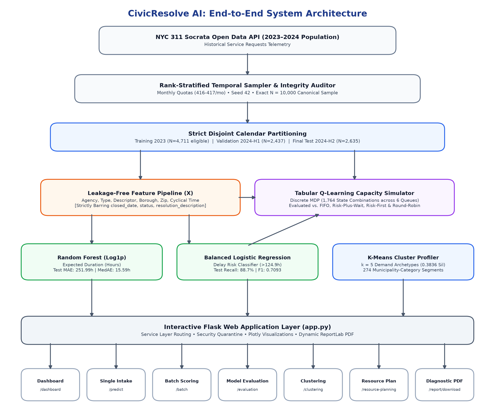
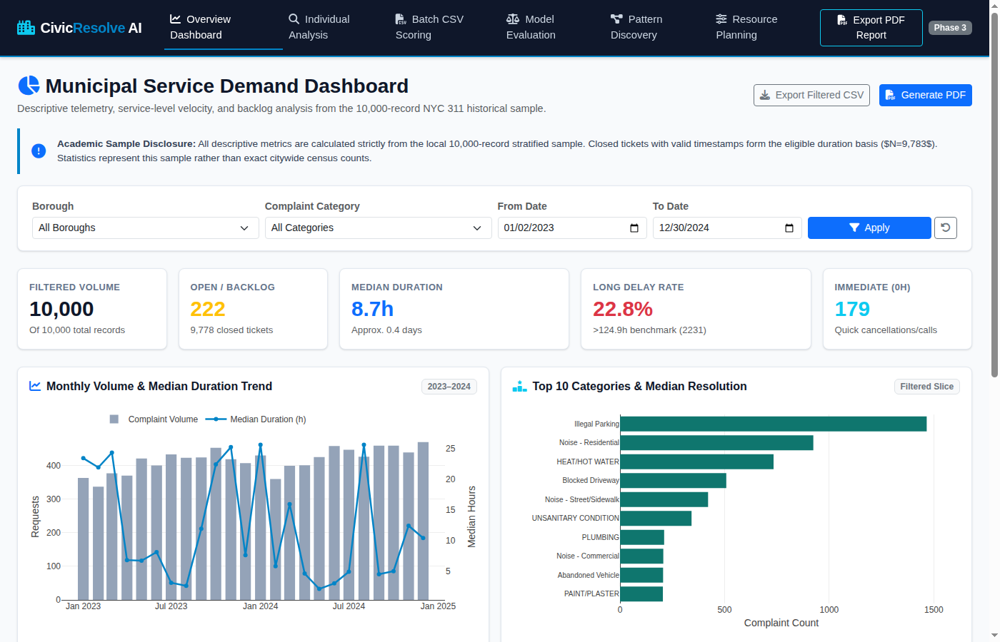
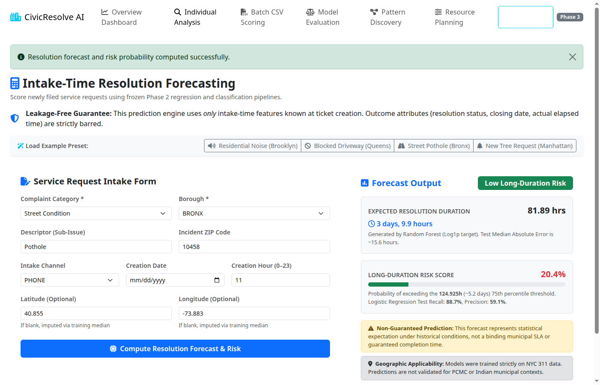
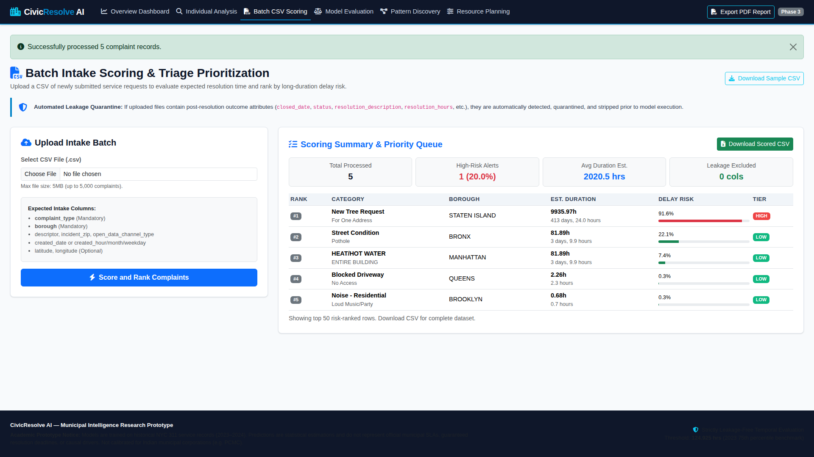
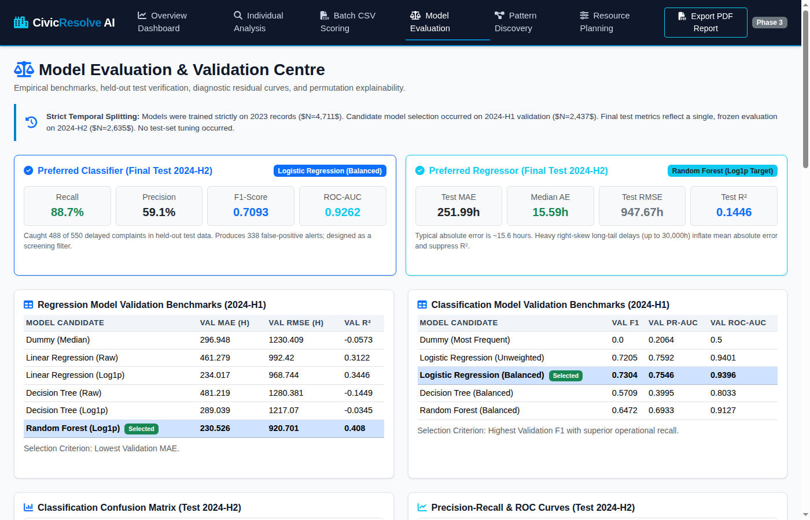
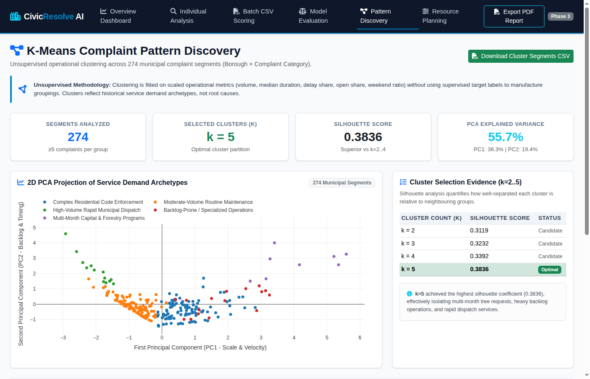
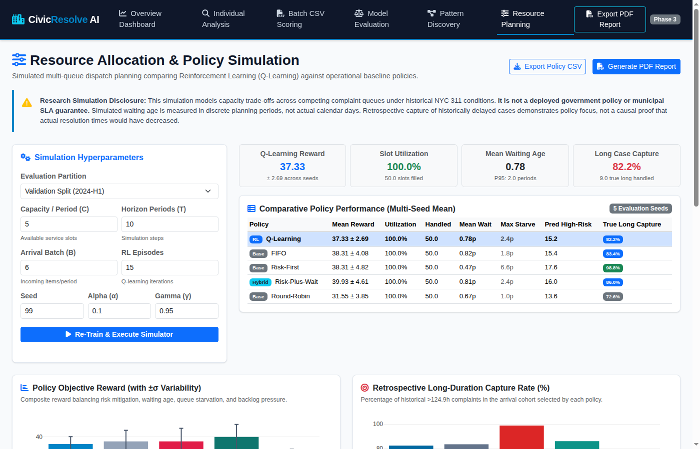
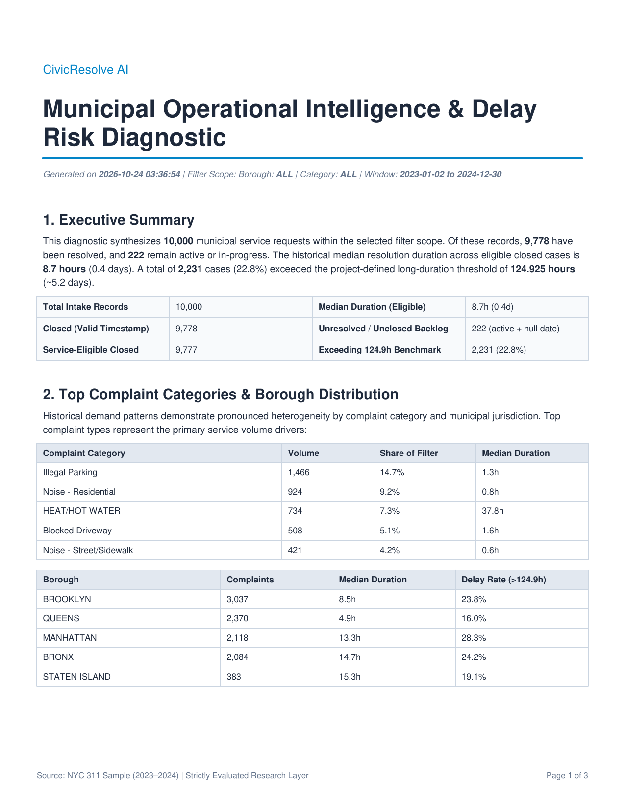

A Mini-Project Report Submitted in Partial Fulfillment of the Requirements for the Degree of
Bachelor of Engineering (B.E.) in Artificial Intelligence and Data Science
Academic Year: 2026–2027
Department: Department of Artificial Intelligence & Data Science
Institution: TODO: [Enter College Name / Savitribai Phule Pune University (SPPU) before submission]
Candidate Name: Tejas [TODO: Enter Student Roll No. / Seat No. before submission]
Supervisor / Guide: TODO: [Enter Project Guide Name / Internal Review Committee before submission]
Municipal service management systems such as 311 hotlines handle hundreds of thousands of non-emergency citizen grievances annually, spanning street repairs, noise disturbances, heating emergencies, and sanitary hazards. Traditional first-come-first-served (FIFO) ticket routing often fails to identify high-risk complaints that subsequently exceed expected resolution timelines, creating citizen dissatisfaction and administrative backlog.
CivicResolve AI is an end-to-end municipal operational intelligence, predictive triage, unsupervised pattern discovery, and reinforcement learning allocation system developed using open municipal 311 data from New York City (2023–2024, N = 10,000 rank-stratified records). The system implements:
closed_date, status, resolution_description). Evaluates regression pipelines (Random Forest Log1p achieving Test MAE 251.99 hours, Median Absolute Error 15.59 hours, and Test R² of 0.1446) and classification triage filters (Class-Balanced Logistic Regression achieving Test Recall 88.73%, Precision 59.08%, and F1 0.7093 in capturing delayed cases exceeding the empirical 124.925-hour benchmark).src/preprocess.py)src/services/)app.py)src/services/report_service.py)Modern municipal corporations receive millions of non-emergency 311 citizen requests regarding infrastructure, sanitation, noise, and housing. Urban dispatchers face three fundamental bottlenecks:
resolution_description, status_change_date, agency_action) that are unavailable at time of citizen submission, yielding artificially inflated accuracy that collapses in production.Predictive civic intelligence must bridge technical rigor with public-sector responsibility. Municipal data features extreme right-skewed durations (from instant closures to months-long structural investigations), severe class imbalance, and data entry anomalies. An engineering solution must provide robust probabilistic forecasts, operational cluster archetypes, and transparent capacity simulation while maintaining scientific honesty regarding what models can and cannot guarantee.
pdftotext, pdftoppm)nvme0n1 high-speed storage)The project is executed in an isolated Python virtual environment (.venv). While requirements.txt contains unpinned package names (pandas, numpy, scikit-learn, flask, plotly, matplotlib, seaborn, reportlab, joblib) to maximize portability across minor platform variations, the runtime environment was verified against the exact pinned versions listed above via .venv/bin/python -m pip freeze.
The dataset was obtained from the New York City Open Data Socrata API for 311 Service Requests. To ensure balanced temporal representation across seasonal shifts without overwhelming local memory, a monthly rank-stratified quota sampling algorithm was executed across 24 consecutive calendar months (January 1, 2023 to December 31, 2024):
Continuous Target (y_reg): Elapsed resolution duration in decimal hours:
Mathematical Definition:
resolution_hours = (closed_date - created_date) / 3600 seconds
Rows with negative durations (21 data entry errors where closing timestamp preceded creation timestamp) were excluded from supervised training.
Binary Classification Target (y_cls): High-delay binary indicator (1 if resolution_hours > τ, else 0).
The delay threshold τ = 124.925 hours (~5.2 days) was derived strictly from the 2023 training partition's 75th percentile. It was frozen and applied to all subsequent validation and test sets without recomputation.
Input features are restricted to intake-time variables:
Spatial: latitude, longitude, borough, incident_zip.
Categorical: complaint_type, descriptor, open_data_channel_type.
Cyclical Temporal: Hour of day (t in [0, 23], period T = 24) and month of year (t in [1, 12], period T = 12) transformed via custom Scikit-learn transformer:
Cyclical Harmonic Coordinates:
x_sin = sin(2 * π * t / T), x_cos = cos(2 * π * t / T)
Categorical Handling: OneHotEncoder(min_frequency=15, handle_unknown='ignore') prevents dimensionality explosion and handles unseen categories safely. Missing coordinates receive median imputation fitted on training data.
Data is partitioned strictly by calendar boundaries without random shuffling:

Figure 4.1: End-to-end CivicResolve AI system architecture spanning stratified temporal sampling, leakage-free feature pipelines, supervised models, unsupervised K-Means archetyping, tabular Q-learning capacity allocation simulation, and the interactive Flask web service layer.The codebase adheres to service-oriented separation of concerns:
src/features.py: Feature contracts, allowlists, and temporal partitioning.src/preprocess.py: ColumnTransformer, median imputers, cyclical transformers.src/services/analytics_service.py: KPI computation and aggregation.src/services/prediction_service.py: Model loading, single/batch prediction.src/services/clustering_service.py: Silhouette scoring, PCA, and cluster profiles.src/services/rl_simulation_service.py: Discrete environment, Q-learning agent, and multi-seed evaluator.src/services/report_service.py: Two-pass PDF generation with simulation appendix.Any post-resolution or target-derived attribute present in uploaded CSV files is immediately quarantined into an unverified container and barred from model inference:
EXCLUDED_POST_RESOLUTION_FIELDS = ["unique_key", "closed_date", "status", "resolution_description", "resolution_hours", "target_long_duration", "closed_dt_local"].
z = log(1 + y); inverse transform (expm1): y_hat = exp(z_hat) - 1.Municipal complaint records are aggregated retrospectively by (complaint_type, borough) into 274 municipality-category segments (filtering segments with fewer than 5 records to ensure statistical stability). While the K-Means clustering algorithm itself is unsupervised, the input features contain historical outcome-derived aggregates. These clusters represent retrospective descriptive operational profiles, not intake-time predictions, root causes, or causal findings:
request_count)median_resolution_hours)long_duration_share)open_case_share)weekend_share)Features are standardized via StandardScaler. Model selection evaluates cluster counts k in [2, 5] using the silhouette coefficient:
Queues (K = 6): Illegal Parking, Noise - Residential, HEAT/HOT WATER, Blocked Driveway, Noise - Street/Sidewalk, Other.
State Tuple: (highest_risk_queue, oldest_queue, capacity_tier, backlog_tier, risk_pressure) yielding 1,764 discrete state combinations.
Bellman Equation:
Q-Value Bellman Update:
Q(s, a) <- Q(s, a) + alpha * [ r + gamma * max_a' Q(s', a') - Q(s, a) ]
Hyperparameters: learning rate alpha = 0.10, discount factor gamma = 0.95, exploration decay epsilon from 1.0 to 0.05.
Human-Engineered Step Reward Formulation: The reinforcement learning agent learns an action policy under a human-designed composite reward function balancing triage risk, customer waiting, and system-wide backlogs:
Composite Step Reward Function:
r = w_risk * pred_risk + w_wait * norm_wait - w_backlog * risk_backlog - penalties
Manually Selected Weights: w_risk = 2.0 (triage risk priority), w_wait = 1.0 (waiting time penalty weight), w_backlog = 0.15 (system-wide backlog penalty weight); empty-queue penalty = 0.5, starvation penalty = 0.4 (applied if any queue is neglected for > 3 consecutive periods).
src/preprocess.py)class CyclicFeatureTransformer(BaseEstimator, TransformerMixin):
def __init__(self, periods: dict[str, float] | None = None) -> None:
self.periods = periods or {"created_hour": 24.0, "created_month": 12.0}
def fit(self, X: pd.DataFrame | np.ndarray, y: Any = None) -> CyclicFeatureTransformer:
self.is_fitted_ = True
return self
def transform(self, X: pd.DataFrame | np.ndarray) -> np.ndarray:
df = X.copy() if isinstance(X, pd.DataFrame) else pd.DataFrame(X, columns=list(self.periods.keys()))
outputs = []
for col, period in self.periods.items():
vals = df[col].astype(float).values
outputs.append(np.sin(2.0 * np.pi * vals / period).reshape(-1, 1))
outputs.append(np.cos(2.0 * np.pi * vals / period).reshape(-1, 1))
return np.hstack(outputs)
To prevent syntax errors in IDE language services and protect against script injection, all server data passed into Plotly charts is embedded using <script type="application/json"> elements and parsed via JSON.parse(document.getElementById(...).textContent).
To eliminate ambiguity across operational dashboards, administrative PDF reports, and supervised modeling pipelines, the canonical 10,000-record dataset definitions are reconciled as follows:
Closed: 9,846; In Progress: 109; Pending: 24; Open: 11; Assigned: 7; Started: 2; Unspecified: 1 (Total non-Closed recorded status: 154 records).closed_date; 196 records have missing closing timestamps.Closed with a non-null closing timestamp. (68 records marked Closed in the source database lack a closing timestamp: 9,846 - 9,778 = 68).Closed that lack completion timestamps (154 + 68 = 222).Closed status, non-null closed_date, and non-negative resolution duration (resolution_hours >= 0). Exactly 1 record has a data entry error where closing preceded creation (resolution_hours = -11.97), yielding 9,777 service-eligible closed records. The sample median resolution duration is 23.9 hours, and 2,444 records exceed the 124.925-hour delay benchmark (representing exactly 25.0% of the 9,777 service-eligible closed population).closed_date.notna() & resolution_hours >= 0). This population comprises 9,777 closed records plus 6 non-closed tickets that recorded valid completion timestamps and non-negative durations (9,777 + 6 = 9,783).| Pipeline | Task | Metric 1 | Metric 2 | Metric 3 | Assessment |
|---|---|---|---|---|---|
| Random Forest (Log1p) | Regression | MAE: 251.99 hours | MedAE: 15.59 hours | R²: 0.1446 | Typical absolute error ~15.6 hours; heavy right tail expands MAE. |
| Ridge Regression (Log1p) | Regression | MAE: 267.42 hours | MedAE: 22.18 hours | R²: 0.0892 | Baseline linear shrinkage underperforms Random Forest. |
| Logistic Regression (Balanced) | Classification | Recall: 88.73% | Precision: 59.08% | F1: 0.7093 | Identified 488 of 550 delayed requests (338 false-positive alerts). |
| Random Forest (Balanced) | Classification | Recall: 81.27% | Precision: 63.85% | F1: 0.7153 | Higher precision but lower screening recall. |
Confusion Matrix (Logistic Regression Balanced, Test Set):
Evaluated across 274 municipality-category segments:
| Policy | Mean Reward ± Std | Slot Util % | Handled Items | Mean Wait (periods) | Max Starvation (periods) | True Long Capture % |
|---|---|---|---|---|---|---|
| Risk-Plus-Wait | 39.93 ± 4.61 | 100.0% | 50.0 | 0.81 | 2.4 | 86.0% |
| FIFO | 38.31 ± 4.08 | 100.0% | 50.0 | 0.82 | 1.8 | 83.4% |
| Risk-First | 38.31 ± 4.82 | 100.0% | 50.0 | 0.47 | 6.6 | 98.8% |
| Q-Learning | 37.33 ± 2.69 | 100.0% | 50.0 | 0.78 | 2.4 | 82.2% |
| Round-Robin | 31.55 ± 3.85 | 100.0% | 50.0 | 0.67 | 1.0 | 72.6% |
Q-Learning Ranking: Heuristic Risk-Plus-Wait achieved the highest mean step reward (39.93 ± 4.61), followed by FIFO (38.31 ± 4.08) and Risk-First (38.31 ± 4.82). Tabular Q-learning achieved 37.33 ± 2.69 and is not the top-performing policy on the mean reward metric.
Quantization Penalty: In tabular reinforcement learning, discretizing continuous queue state variables into coarse bins (1,764 combinations) creates quantization loss compared to fine-grained continuous priority weighting (Risk-Plus-Wait).
Policy Balance & Robustness: The Q-learning agent learns an action policy under a human-designed composite reward function with manually configured weights. It demonstrated the lowest standard deviation across seeds (2.69), avoided severe starvation (2.4 periods vs 6.6 periods for pure Risk-First), and learned an effective multi-queue dispatch policy outperforming static Round-Robin (31.55 ± 3.85).
Retrospective True Long-Duration Capture Formulation:
High-Risk Capture Rate Formula:
Capture Rate = (Handled Delayed Tickets / Total Delayed Arrival Cohort Tickets) * 100%
(where Delayed Tickets are those with historical resolution duration > 124.925 hours)
This is a diagnostic metric evaluated strictly over historically resolved tickets within the simulated cohort; simulated results do not constitute causal proof of real-world municipal delay reduction.
Verification via pytest tests/ -v executed during Phase 5.2 confirmed:
tests/test_phase1.py ......... [ 20%]
tests/test_phase2.py .......... [ 42%]
tests/test_phase3.py ............ [ 68%]
tests/test_phase4.py .............. [100%]
============================= 45 passed in 25.23s =============================
| Interface | Route | Screenshot Evidence | Description |
|---|---|---|---|
| Overview Dashboard | /dashboard |
report/screenshots/01_dashboard.png |
Volume KPIs (10,000 total, 222 backlog), monthly trends, borough delays. |
| Single Analysis | /predict |
report/screenshots/02_individual_prediction.png |
Intake form, expected hours (81.89h), delay risk (20.4%). |
| Batch CSV Scoring | /batch |
report/screenshots/03_batch_csv_scoring.png |
Scored priority queue, risk-tier badges, quarantined fields banner. |
| Model Evaluation | /evaluation |
report/screenshots/04_model_evaluation.png |
Test confusion matrix, PR/ROC curves, feature ranking. |
| Pattern Discovery | /clustering |
report/screenshots/05_kmeans_clustering.png |
2D PCA cluster scatter plot (k = 5, 55.7% variance), archetype table. |
| Resource Planning | /resource-planning |
report/screenshots/06_resource_planning.png |
Canonical benchmark table (37–40 rewards), comparative bar charts. |
| Diagnostic PDF | /report/download |
report/screenshots/07_pdf_report-1.png |
Multi-page ReportLab PDF export with simulation appendix. |

Figure 7.1: Overview Municipal Dashboard (/dashboard) displaying key volume KPIs, borough delays, and distribution trends.

Figure 7.2: Single Complaint Prediction (/predict) showing intake-time features and dual inference outcomes.

Figure 7.3: Batch CSV Scoring (/batch) showing uploadDropzone, scoring summary, and prioritized triage queue.

Figure 7.4: Model Evaluation Dashboard (/evaluation) displaying test metrics, confusion matrix, and feature association.

Figure 7.5: K-Means Clustering (/clustering) with PCA 2D scatter visualization and operational archetype descriptions.

Figure 7.6: Resource Planning Simulator (/resource-planning) showing multi-policy evaluation and Q-learning metrics.

Figure 7.7: Multi-page Diagnostic PDF Report (/report/download) generated via ReportLab.
CivicResolve AI demonstrates that municipal complaint management can be substantially enhanced through leakage-free machine learning, unsupervised pattern segmentation, and reinforcement learning capacity planning. The project bridges the gap between theoretical modeling and public administration realities.